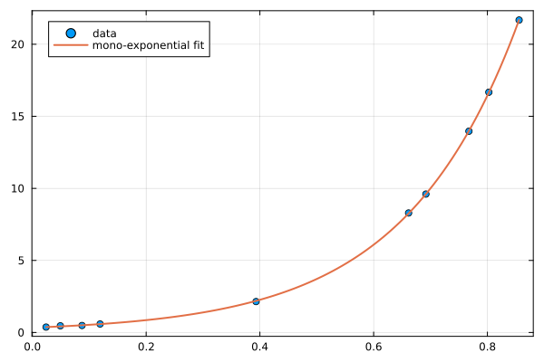
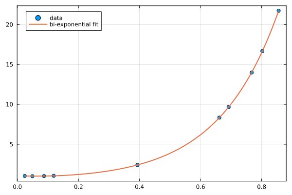

Exponential fits
Use the fitexp (or fitexponential) function for a single exponential:
using EasyFit, Plots, Random
Random.seed!(1)
x = sort(rand(10))
y = @. 0.3 * exp(5x) + 0.1 * rand()
fit = fitexp(x, y)------------ Single Exponential fit -----------
Equation: y = a exp(-x/b) + c
With: a = 0.305083437365702
b = -0.20074766557143317
c = 0.030124288906046678
Correlation coefficient, R² = 0.9999880977348544
Average square residue = 0.0006642534841694943
Predicted Y: ypred = [ 0.3741127701721508, 0.41988334223200313, ...]
residues = [ 0.0009528362402886903, -0.041547350092677016, ...]
-----------------------------------------------
scatter(x, y, label="data", framestyle=:box)
plot!(fit.x, fit.y, label="mono-exponential fit", linewidth=2)
Add n=N for a sum of N exponentials:
y2 = @. 0.3 * exp(5x) + 0.7 * exp(-3x) + 0.05 * rand()
fit2 = fitexp(x, y2, n=2)-------- Multiple-exponential fit -------------
Equation: y = sum(a[i] exp(-x/b[i]) for i in 1:2) + c
With: a = [0.2807298042068901, 0.453354494601515]
b = [-0.19744259810595838, 0.1551159730964399]
c = 0.3185651676333109
Correlation coefficient, R² = 0.9999984215010881
Average square residue = 8.329967047048754e-5
Predicted Y: ypred = [1.0238621561932546, 1.0088766970486323, ...]
residues = [-0.00518559219926451, 0.010903864896905868, ...]
-----------------------------------------------
scatter(x, y2, label="data", framestyle=:box)
plot!(fit2.x, fit2.y, label="bi-exponential fit", linewidth=2)
The intercept c is fitted freely by default; it can be fixed to a constant value with the c keyword, and lower/upper bounds can be set as described in Bounds and fixed parameters:
fitexp(x, y2, n=2, c=0.0)-------- Multiple-exponential fit -------------
Equation: y = sum(a[i] exp(-x/b[i]) for i in 1:2) + c
With: a = [0.30178841414149066, 0.7108180066961048]
b = [-0.20026302507318786, 0.36649975670269935]
c = 0.0
Correlation coefficient, R² = 0.9999955666523792
Average square residue = 0.00023403905401409318
Predicted Y: ypred = [1.0059627040175314, 1.007349258941899, ...]
residues = [-0.023085044374987707, 0.009376426790172698, ...]
-----------------------------------------------